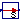
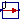
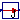

| Name | Description |
|---|---|
| Convert signal to a signal with different unit | |
| Convert from Kelvin to °Celsius | |
| Convert from °Celsius to Kelvin | |
| Convert from Kelvin to °Fahrenheit | |
| Convert from °Fahrenheit to Kelvin | |
| Convert from Kelvin to °Rankine | |
| Convert from °Rankine to Kelvin | |
| Convert from radian to degree | |
| Convert from degree to radian | |
| Convert from radian per second to revolutions per minute | |
| Convert from revolutions per minute to radian per second | |
| Convert from metre per second to kilometre per hour | |
| Convert from kilometre per hour to metre per second | |
| Convert from second to day | |
| Convert from day to second | |
| Convert from second to hour | |
|  From_hour | Convert from hour to second |
| Convert from second to minute | |
| Convert from minute to second | |
| Convert from cubic metre to litre | |
| Convert from litre to cubic metre | |
|  To_kWh | Convert from Joule to kilo Watt hour |
|  From_kWh | Convert from kilo Watt hour to Joule |
| Convert from Pascal to bar | |
| Convert from bar to Pascal | |
| Convert from kilogram per second to gram per second | |
| Convert from gram per second to kilogram per second |
 Modelica.Blocks.Math.UnitConversions.ConvertAllUnits
Modelica.Blocks.Math.UnitConversions.ConvertAllUnits

This block implements the Modelica.SIunits.Conversions functions as a fixed causality block to simplify their use. The block contains a replaceable block class ConversionBlock that can be changed to be any of the blocks defined in Modelica.Blocks.Math.UnitConversions, and more generally, any blocks that extend from Modelica.Blocks.Interfaces.PartialConversionBlock.
| Type | Name | Default | Description |
|---|---|---|---|
| replaceable block ConversionBlock | PartialConversionBlock | Conversion block | |
| Type | Name | Description |
|---|---|---|
| input | u | Connector of Real input signal to be converted |
| output | y | Connector of Real output signal containing input signal u in another unit |
block ConvertAllUnits
"Convert signal to a signal with different unit"
replaceable block ConversionBlock =
Modelica.Blocks.Interfaces.PartialConversionBlock "Conversion block";
extends ConversionBlock;
end ConvertAllUnits;
 Modelica.Blocks.Math.UnitConversions.To_degC
Modelica.Blocks.Math.UnitConversions.To_degC
block To_degC "Convert from Kelvin to °Celsius"
extends Modelica.Blocks.Interfaces.PartialConversionBlock(u(unit="K"), y(
unit="degC"));
equation
y = SI.Conversions.to_degC(u);
end To_degC;
 Modelica.Blocks.Math.UnitConversions.From_degC
Modelica.Blocks.Math.UnitConversions.From_degC
block From_degC "Convert from °Celsius to Kelvin"
extends Modelica.Blocks.Interfaces.PartialConversionBlock(u(unit="degC"),
y(unit="K"));
equation
y = SI.Conversions.from_degC(u);
end From_degC;
 Modelica.Blocks.Math.UnitConversions.To_degF
Modelica.Blocks.Math.UnitConversions.To_degF
block To_degF "Convert from Kelvin to °Fahrenheit"
extends Modelica.Blocks.Interfaces.PartialConversionBlock(u(unit="K"), y(
unit="degF"));
equation
y = SI.Conversions.to_degF(u);
end To_degF;
 Modelica.Blocks.Math.UnitConversions.From_degF
Modelica.Blocks.Math.UnitConversions.From_degF
block From_degF "Convert from °Fahrenheit to Kelvin"
extends Modelica.Blocks.Interfaces.PartialConversionBlock(u(unit="degF"),
y(unit="K"));
equation
y = SI.Conversions.from_degF(u);
end From_degF;
 Modelica.Blocks.Math.UnitConversions.To_degRk
Modelica.Blocks.Math.UnitConversions.To_degRk
block To_degRk "Convert from Kelvin to °Rankine"
extends Modelica.Blocks.Interfaces.PartialConversionBlock(u(unit="K"), y(
unit="degRk"));
equation
y = SI.Conversions.to_degRk(u);
end To_degRk;
 Modelica.Blocks.Math.UnitConversions.From_degRk
Modelica.Blocks.Math.UnitConversions.From_degRk
block From_degRk "Convert from °Rankine to Kelvin"
extends Modelica.Blocks.Interfaces.PartialConversionBlock(u(unit="degRk"),
y(unit="K"));
equation
y = SI.Conversions.from_degRk(u);
end From_degRk;
 Modelica.Blocks.Math.UnitConversions.To_deg
Modelica.Blocks.Math.UnitConversions.To_deg
block To_deg "Convert from radian to degree"
extends Modelica.Blocks.Interfaces.PartialConversionBlock(u(unit="rad"),
y(unit="deg"));
equation
y = SI.Conversions.to_deg(u);
end To_deg;
 Modelica.Blocks.Math.UnitConversions.From_deg
Modelica.Blocks.Math.UnitConversions.From_deg
block From_deg "Convert from degree to radian"
extends Modelica.Blocks.Interfaces.PartialConversionBlock(u(unit="deg"),
y(unit="rad"));
equation
y = SI.Conversions.from_deg(u);
end From_deg;
 Modelica.Blocks.Math.UnitConversions.To_rpm
Modelica.Blocks.Math.UnitConversions.To_rpm
block To_rpm
"Convert from radian per second to revolutions per minute"
extends Modelica.Blocks.Interfaces.PartialConversionBlock(u(unit="rad/s"),
y(unit="rev/min"));
equation
y = SI.Conversions.to_rpm(u);
end To_rpm;
 Modelica.Blocks.Math.UnitConversions.From_rpm
Modelica.Blocks.Math.UnitConversions.From_rpm
block From_rpm
"Convert from revolutions per minute to radian per second"
extends Modelica.Blocks.Interfaces.PartialConversionBlock(u(unit=
"rev/min"), y(unit="rad/s"));
equation
y = SI.Conversions.from_rpm(u);
end From_rpm;
 Modelica.Blocks.Math.UnitConversions.To_kmh
Modelica.Blocks.Math.UnitConversions.To_kmh
block To_kmh "Convert from metre per second to kilometre per hour"
extends Modelica.Blocks.Interfaces.PartialConversionBlock(u(unit="m/s"),
y(unit="km/h"));
equation
y = SI.Conversions.to_kmh(u);
end To_kmh;
 Modelica.Blocks.Math.UnitConversions.From_kmh
Modelica.Blocks.Math.UnitConversions.From_kmh
block From_kmh "Convert from kilometre per hour to metre per second"
extends Modelica.Blocks.Interfaces.PartialConversionBlock(u(unit="km/h"),
y(unit="m/s"));
equation
y = SI.Conversions.from_kmh(u);
end From_kmh;
 Modelica.Blocks.Math.UnitConversions.To_day
Modelica.Blocks.Math.UnitConversions.To_day
block To_day "Convert from second to day"
extends Modelica.Blocks.Interfaces.PartialConversionBlock(u(unit="s"), y(
unit="d"));
equation
y = SI.Conversions.to_day(u);
end To_day;
 Modelica.Blocks.Math.UnitConversions.From_day
Modelica.Blocks.Math.UnitConversions.From_day
block From_day "Convert from day to second"
extends Modelica.Blocks.Interfaces.PartialConversionBlock(u(unit="d"), y(
unit="s"));
equation
y = SI.Conversions.from_day(u);
end From_day;
 Modelica.Blocks.Math.UnitConversions.To_hour
Modelica.Blocks.Math.UnitConversions.To_hour
block To_hour "Convert from second to hour"
extends Modelica.Blocks.Interfaces.PartialConversionBlock(u(unit="s"), y(
unit="h"));
equation
y = SI.Conversions.to_hour(u);
end To_hour;
 Modelica.Blocks.Math.UnitConversions.From_hour
Modelica.Blocks.Math.UnitConversions.From_hour
block From_hour "Convert from hour to second"
extends Modelica.Blocks.Interfaces.PartialConversionBlock(u(unit="h"), y(
unit="s"));
equation
y = SI.Conversions.from_hour(u);
end From_hour;
 Modelica.Blocks.Math.UnitConversions.To_minute
Modelica.Blocks.Math.UnitConversions.To_minute
block To_minute "Convert from second to minute"
extends Modelica.Blocks.Interfaces.PartialConversionBlock(u(unit="s"), y(
unit="min"));
equation
y = SI.Conversions.to_minute(u);
end To_minute;
 Modelica.Blocks.Math.UnitConversions.From_minute
Modelica.Blocks.Math.UnitConversions.From_minute
block From_minute "Convert from minute to second"
extends Modelica.Blocks.Interfaces.PartialConversionBlock(u(unit="min"),
y(unit="s"));
equation
y = SI.Conversions.from_minute(u);
end From_minute;
 Modelica.Blocks.Math.UnitConversions.To_litre
Modelica.Blocks.Math.UnitConversions.To_litre
block To_litre "Convert from cubic metre to litre"
extends Modelica.Blocks.Interfaces.PartialConversionBlock(u(unit="m3"), y(
unit="l"));
equation
y = SI.Conversions.to_litre(u);
end To_litre;
 Modelica.Blocks.Math.UnitConversions.From_litre
Modelica.Blocks.Math.UnitConversions.From_litre
block From_litre "Convert from litre to cubic metre"
extends Modelica.Blocks.Interfaces.PartialConversionBlock(u(unit="l"), y(
unit="m3"));
equation
y = SI.Conversions.from_litre(u);
end From_litre;
 Modelica.Blocks.Math.UnitConversions.To_kWh
Modelica.Blocks.Math.UnitConversions.To_kWh
block To_kWh "Convert from Joule to kilo Watt hour"
extends Modelica.Blocks.Interfaces.PartialConversionBlock(u(unit="J"), y(
unit="kWh"));
equation
y = SI.Conversions.to_kWh(u);
end To_kWh;
 Modelica.Blocks.Math.UnitConversions.From_kWh
Modelica.Blocks.Math.UnitConversions.From_kWh
block From_kWh "Convert from kilo Watt hour to Joule"
extends Modelica.Blocks.Interfaces.PartialConversionBlock(u(unit="kWh"),
y(unit="J"));
equation
y = SI.Conversions.from_kWh(u);
end From_kWh;
 Modelica.Blocks.Math.UnitConversions.To_bar
Modelica.Blocks.Math.UnitConversions.To_bar
block To_bar "Convert from Pascal to bar"
extends Modelica.Blocks.Interfaces.PartialConversionBlock(u(unit="Pa"), y(
unit="bar"));
equation
y = SI.Conversions.to_bar(u);
end To_bar;
 Modelica.Blocks.Math.UnitConversions.From_bar
Modelica.Blocks.Math.UnitConversions.From_bar
block From_bar "Convert from bar to Pascal"
extends Modelica.Blocks.Interfaces.PartialConversionBlock(u(unit="bar"),
y(unit="Pa"));
equation
y = SI.Conversions.from_bar(u);
end From_bar;
 Modelica.Blocks.Math.UnitConversions.To_gps
Modelica.Blocks.Math.UnitConversions.To_gps
block To_gps "Convert from kilogram per second to gram per second"
extends Modelica.Blocks.Interfaces.PartialConversionBlock(u(unit="kg/s"),
y(unit="g/s"));
equation
y = SI.Conversions.to_gps(u);
end To_gps;
 Modelica.Blocks.Math.UnitConversions.From_gps
Modelica.Blocks.Math.UnitConversions.From_gps
block From_gps "Convert from gram per second to kilogram per second"
extends Modelica.Blocks.Interfaces.PartialConversionBlock(u(unit="g/s"),
y(unit="kg/s"));
equation
y = SI.Conversions.from_gps(u);
end From_gps;
 Modelica.Blocks.Math.UnitConversions.ConvertAllUnits.ConversionBlock
Modelica.Blocks.Math.UnitConversions.ConvertAllUnits.ConversionBlock
| Type | Name | Description |
|---|---|---|
| input | u | Connector of Real input signal to be converted |
| output | y | Connector of Real output signal containing input signal u in another unit |
replaceable block ConversionBlock =
Modelica.Blocks.Interfaces.PartialConversionBlock "Conversion block";